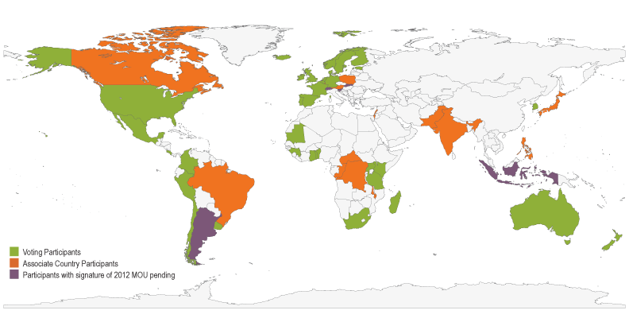
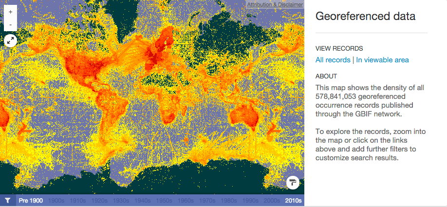
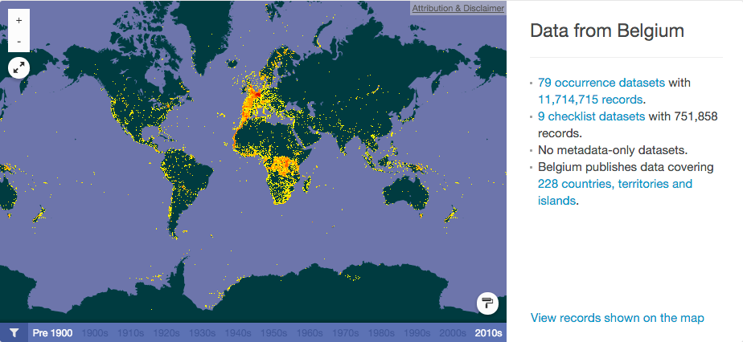
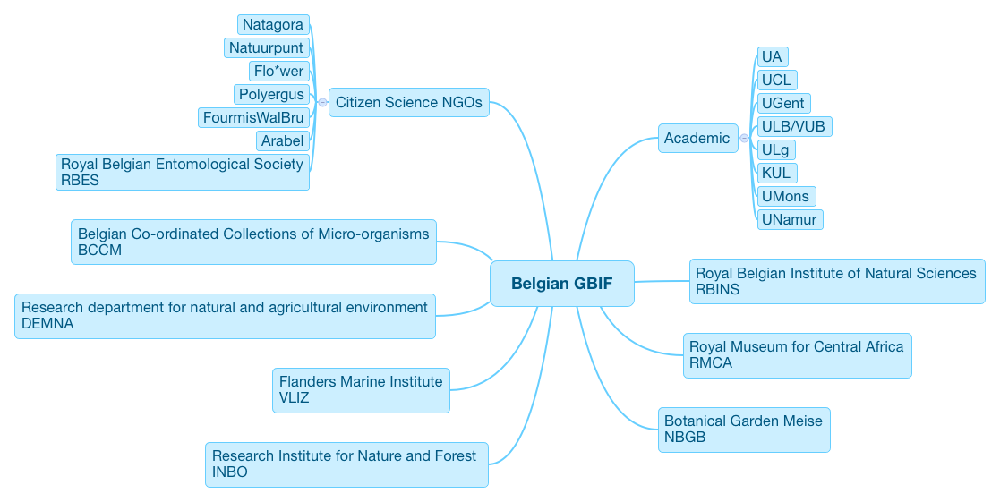
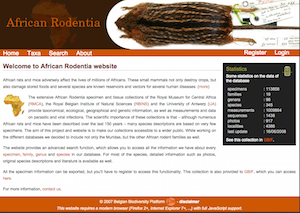
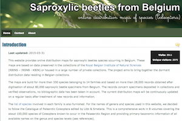
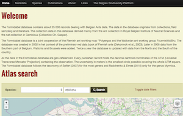
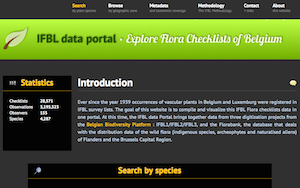

Belgian Biodiversity Platform
Biodiversity Data Mobilization
SAFRED kickoff meeting
24th February 2016

André Heughebaert
Belgian Biodiversity Platform
Contents
GBIF History
- GBIF arose from a recommendation in 1999 by the Biodiversity Informatics Subgroup of the Megascience Forum, set up by the Organization for Economic Cooperation and Development (OECD).
- GBIF's vision:
"A world in which biodiversity information is freely and universally available for science, society and a sustainable future." - Belgium joined GBIF in 2001.
GBIF Participation

53 Countries Participants + 40 Associated Participants
Data @ GBIF.org
578.841.053 records

Data from Belgium
11.714.715 records

Belgian BIF
What do we offer?
- As Belgian GBIF Node, we
- Promote Open Biodiversity Data
- Offer publishing platforms : IPT, BioCase, Tapir
- Publish datasets(46) and checklists(6)
- Encourage Scientists to use GBIF data
- Develop/test GBIF standards and tools
- Coordinate/support Belgian BIF Community
- Collaborate with GBIF Secretariat and other Nodes
Belgian BIF
Community

Data Mobilization Strategy
- Low hanging fruits approach
→ opportunisitic projects with data pionners - Funding 5 digitization calls
→ 20 (relatively small) projects - Support Belgian Institutions
→ helping the process of Data publication (eg INBO) - Support National & Int'l projects
→ helping the process of Data publication (eg BioFresh)
Digitization Call projects
|  |  |
|  |  |
Expertise
- DarwinCore, EML, and GBIF Publishing tools (IPT)
- Databases, GIS, Web frameworks, Sysadmin, UNIX
- 3 FTE based at Belspo
- more than 25 years of IT experience
Expertise
recommended tools


Expertise
but also...


Thank you
Made with reveal.js - HTML Presentations made easy